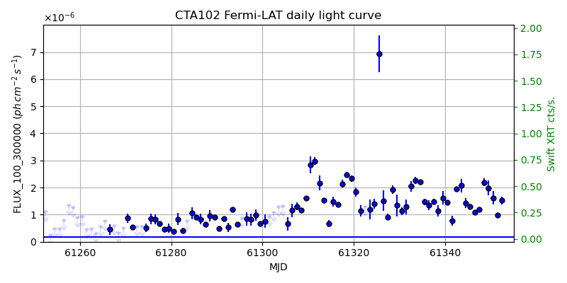
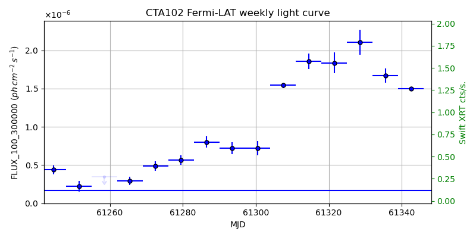
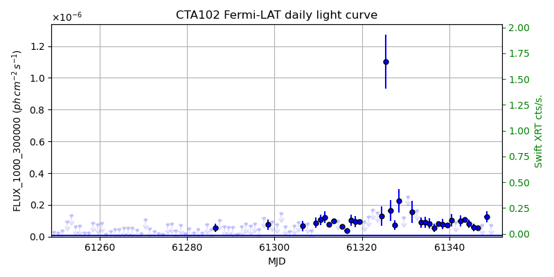
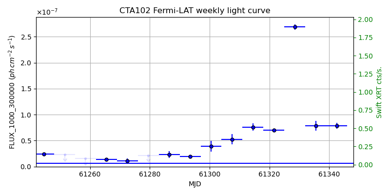

LAT Lightcurve site: https://fermi.gsfc.nasa.gov/ssc/data/access/lat/msl_lc/source/CTA_102
Swift site: https://www.swift.psu.edu/monitoring/source.php?source=CTA102
NED: Query
Time of last update of this page: UT: 2026-11-13 16:29 (MJD: 61357.687)
| Property | Value |
|---|---|
| R.A. | 22:32:36.48 |
| Dec. | 11:43:51.6 |
| z | 1.032 |
| 3FGL SpectrumType | LogParabola |
| 3FGL PL Index | |
| 3FGL Flux_100_300000 | 1.68e-07 1 / (s cm2) |
| 3FGL Flux_1000_300000 | 6.39e-09 1 / (s cm2) |
| 3FGL Flux >200 GeV | 3.94e-13 1 / (s cm2) |
| 3FGL Extrap. Crab >200 GeV | 0.00 |
| 3FGL Flux After EBL Absorption >200GeV | 7.20e-15 1 / (s cm2) |
| 3FGL EBL Crab Fraction >200GeV | 0.00 |

| MJD | dMJD | Flux | dFlux | Frac3FGL | FracCrab>200GeV | EBLFracCrab>200GeV |
|---|---|---|---|---|---|---|
| 61348.50 | 0.50 | 2.20e-06 | 1.49e-07 | 13.08 | 0.02 | 0.00 |
| 61349.50 | 0.50 | 1.99e-06 | 2.82e-07 | 11.83 | 0.02 | 0.00 |
| 61350.50 | 0.50 | 1.62e-06 | 2.47e-07 | 9.64 | 0.02 | 0.00 |
| 61351.50 | 0.50 | 9.72e-07 | 7.75e-08 | 5.79 | 0.01 | 0.00 |
| 61352.50 | 0.50 | 1.52e-06 | 1.40e-07 | 9.07 | 0.02 | 0.00 |

| MJD | dMJD | Flux | dFlux | Frac3FGL | FracCrab>200GeV | EBLFracCrab>200GeV |
|---|---|---|---|---|---|---|
| 61321.50 | 3.50 | 1.84e-06 | 1.39e-07 | 10.94 | 0.02 | 0.00 |
| 61328.50 | 3.50 | 2.11e-06 | 1.62e-07 | 12.55 | 0.02 | 0.00 |
| 61335.50 | 3.50 | 1.67e-06 | 9.30e-08 | 9.94 | 0.02 | 0.00 |
| 61342.50 | 3.50 | 1.50e-06 | 1.01e-08 | 8.92 | 0.01 | 0.00 |
| 61349.50 | 3.50 | 1.50e-06 | 9.61e-08 | 8.90 | 0.01 | 0.00 |

| MJD | dMJD | Flux | dFlux | Frac3FGL | FracCrab>200GeV | EBLFracCrab>200GeV |
|---|---|---|---|---|---|---|
| 61348.50 | 0.50 | 1.26e-07 | 3.53e-08 | 19.76 | 0.03 | 0.00 |
| 61349.50 | 0.50 | 7.26e-08 | 0.00e+00 | 0.00 | 0.00 | 0.00 |
| 61350.50 | 0.50 | 6.60e-08 | 2.53e-08 | 10.32 | 0.02 | 0.00 |
| 61351.50 | 0.50 | 6.85e-08 | 2.15e-08 | 10.71 | 0.02 | 0.00 |
| 61352.50 | 0.50 | 7.11e-08 | 0.00e+00 | 0.00 | 0.00 | 0.00 |

| MJD | dMJD | Flux | dFlux | Frac3FGL | FracCrab>200GeV | EBLFracCrab>200GeV |
|---|---|---|---|---|---|---|
| 61321.50 | 3.50 | 7.03e-08 | 2.30e-09 | 10.99 | 0.02 | 0.00 |
| 61328.50 | 3.50 | 2.69e-07 | 5.13e-09 | 42.04 | 0.07 | 0.00 |
| 61335.50 | 3.50 | 7.87e-08 | 9.32e-09 | 12.32 | 0.02 | 0.00 |
| 61342.50 | 3.50 | 7.88e-08 | 5.67e-09 | 12.32 | 0.02 | 0.00 |
| 61349.50 | 3.50 | 6.05e-08 | 9.69e-09 | 9.46 | 0.02 | 0.00 |
--------------------------------------------------------- Using user-supplied coords: 22:32:36.48 11:43:51.6 2000 --------------------------------------------------------- FLWO UT night of: 2026-11-14 Local Sid. @ Midnight: 03:09 Sunset (-15.0) (local, UT): 18:35 01:35 Sunrise (-15.0) (local, UT): 05:42 12:42 Moonrise (local, UT): Moonset (local, UT): 20:50 03:50 Moon phase: 0.22 --------------------------------------------------------- AzTime LSID UT Obj_el Obj_az Mn_el Mn_az Sep. --------------------------------------------------------- 18:35 21:44 01:35 67.1 147.1 20.1 218.2 64.3 19:05 22:14 02:05 69.7 165.9 16.0 223.7 64.1 19:35 22:44 02:35 70.1 187.4 11.6 228.6 63.9 20:05 23:14 03:05 68.1 207.4 6.9 233.2 63.7 20:35 23:44 03:35 64.4 223.2 2.0 237.3 63.5 21:05 00:14 04:05 59.6 235.1 -2.2 241.2 63.3 21:35 00:44 04:35 54.0 244.0 -9.0 244.8 63.0 22:05 01:14 05:05 48.1 251.0 -14.6 248.2 62.8 22:35 01:44 05:35 42.0 256.7 -20.4 251.4 62.5 23:05 02:14 06:05 35.7 261.6 -26.2 254.5 62.3 23:35 02:44 06:35 29.3 266.0 -32.1 257.5 62.0 00:05 03:14 07:05 23.0 270.1 -38.1 260.6 61.7 00:35 03:45 07:35 16.6 274.0 -44.2 263.8 61.4 01:05 04:15 08:05 10.2 277.8 -50.2 267.1 61.1 01:35 04:45 08:35 4.0 281.6 -56.3 270.9 60.8 02:05 05:15 09:05 -1.4 285.5 -62.4 275.3 60.5 02:35 05:45 09:35 -8.5 289.6 -68.4 281.1 60.2 03:05 06:15 10:05 -14.4 294.1 -74.2 289.9 59.9 03:35 06:45 10:35 -20.1 298.9 -79.6 306.2 59.5 04:05 07:15 11:05 -25.6 304.3 -83.2 343.5 59.2 04:35 07:45 11:35 -30.7 310.3 -82.1 35.1 58.9 05:05 08:15 12:05 -35.3 317.2 -77.4 61.2 58.6 05:35 08:45 12:35 -39.3 324.9 -71.8 73.4 58.3 05:42 08:52 12:42 -40.1 326.7 -70.5 75.2 58.3 --------------------------------------------------------- Dark hours >55 deg.: 0.67 srcstart (UT): 2026-11-14 03:50 srcend (UT): 2026-11-14 04:30